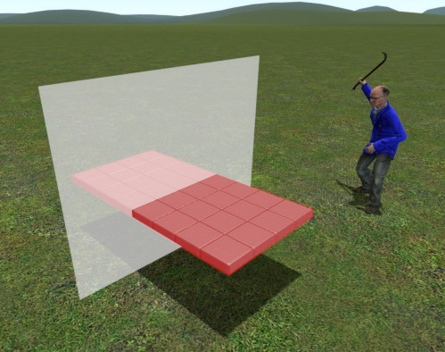

For those unfamiliar, hunter plates are a subset of the default construction props in Garry's Mod. They are my
favorite props to build with, and are objectively the most popular within the Garry's Mod community.
There's just one problem. The tiles that comprise these plates are impossible to split apart by normal means.
This meant that in the past, if I ever wanted to trim off excess, cut out shapes, or split faces, I had to
manually reconstruct new and complex arrangements of plates to fit my desires. Doing this was both time intensive
and often wasteful in terms of entity count.
So guess what? About a year after concieving the idea, I'm proud to present my hunter plate cutter to the world—the hottest new
thing since Precision Alignment! Now you can rip hunter plates along their seams like plywood boards on a table saw!
This E2 aims to solve all three of the aforementioned problems in a single group of shared utilities. These
utilities are all powered by one piece of code—a recursive plate building function. It can take orders
for any size hunter plate (even those that don't exist) and spawn it at any location and angle—all without
requiring prop resizing or custom models! This function not only allows you to summon whatever size
plates your builds call for, but also lets you to cut them in half and punch out holes of custom dimensions.
Make sure to first grab the dependencies
from my Github if you want to try this out. Cheers!